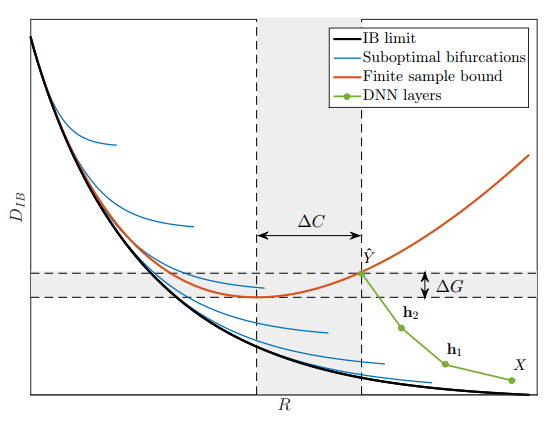
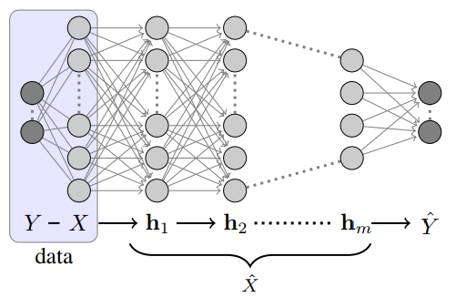

Deep learning and the information bottleneck principle
Tishby, Naftali, and Noga Zaslavsky. “Deep learning and the information bottleneck principle.” Information Theory Workshop (ITW), 2015 IEEE. IEEE, 2015.
Summary
This paper elaborates on Tishby 2000, expecially clarifying the information plane and the “structure of solutions” (c.f. notes):
In the learning problem, we want to extract the relevant information about a variable \(Y\) from the input source \(X\) into the representation \(\hat{X}\). And so \(\hat{X}\) is a minimal sufficient statistics of \(X\) and \(Y\) (i.e. it captures as much of the mutual information \(I(X;Y)\) as possible while minimizing \(I(X;\hat{X})\), other irrelvant information). This suggests the following Lagrangian to maximize \(I(\hat{X};Y)\): \[\mathcal{L}\big[p(\hat{x}|x)\big] = I(X;\hat{X}) - \beta I(\hat{X};Y).\] Or, equivalently, the Lagrangian minimizing all information of \(Y\) in \(X\) not captured by \(\hat{X}\): \[\tilde{\mathcal{L}} \big[p(\hat{x}|x)\big] = I(X;\hat{X}) + \beta I(X;Y|\hat{X}).\]
From Equation (2), we see that this is precisely a rate-distortion problem, where the expected distortion is \(D_{IB} = I(X;Y|\hat{X})\). The information-theoretic limit of the tradeoff between distortion \(D_{IB}\) and rate \(R\) (i.e. \(I(X;\hat{X})\), the expected bit-ratio of \(\hat{X}\) and \(X\)) is given by the black curve on the information plane below:

The tradeoff between rate \(R\) of encoding \(X \to \hat{X}\) and the distortion \(D_{IB}\). The black line is the information-theoretic limit. The blue lines correspond to the limits for “different topological representations of \(\hat{X}\), such as different cardinality in clustering by deterministic annealing”. Source: Tishby 2015In the above figure, the green line corresponds to the information \(I(Y;\mathbf{h}_i)\) about \(Y\) contained in the hidden layer \(\mathbf{h}_i\) in a neural network (say, the below figure). As information cannot be recovered once lost, the curve is monotonic increasing.

A neural network; given input \(X\), it returns an estimator \(\hat{Y}\) of \(Y\) through a series of hidden layers with weights \(\mathbf{h}_i\). Source: Tishby 2015Finally, the quantities \(\Delta G\) and \(\Delta C\) are the generalization gap and the complexity gap, respectively. The generalization gap is the amount of information the network failed to capture while the complexity gap is the amount of unnecessary complexity in the network.
Asides
Consider a single neuron in a usual neural network, parametrized by weights \(\mathbf{w}\) and biases \(\mathbf{b}\): \[\mathrm{Neuron}(\mathbf{x}) = \mathrm{sigmoid}(\mathbf{w} \cdot \mathbf{x} + \mathbf{b}).\] Such a neuron can only classify linearly separable inputs. They are linearly separable if the inputs are conditionally independent. See Richard 1991 for more details.
Hidden layers within a neural network then allow for representational changes, to decouple the inputs. Other techniques can also decouple inputs—embedding into higher dimension (kernels) or random expansion.
Discussion
Question 1: this paper notes that this analysis is possible through viewing “DNN training as a successive (Markovian)” compressions of data. Can we use this perspective to explicitly view neural networks as dynamical systems? (c.f. question 1 in notes).
Question 2: can this perspective be used to analyze other learning models?
Keywords/Further Reading
- Mehta 2014, An exact mapping between Variational Renormalization Group and Deep Learning
- Richard 1991, Neural network classifiers estimate Bayesian a posteriori probabilities
- On dynamical systems and neural networks, perhaps Haschke 2004 may be useful.